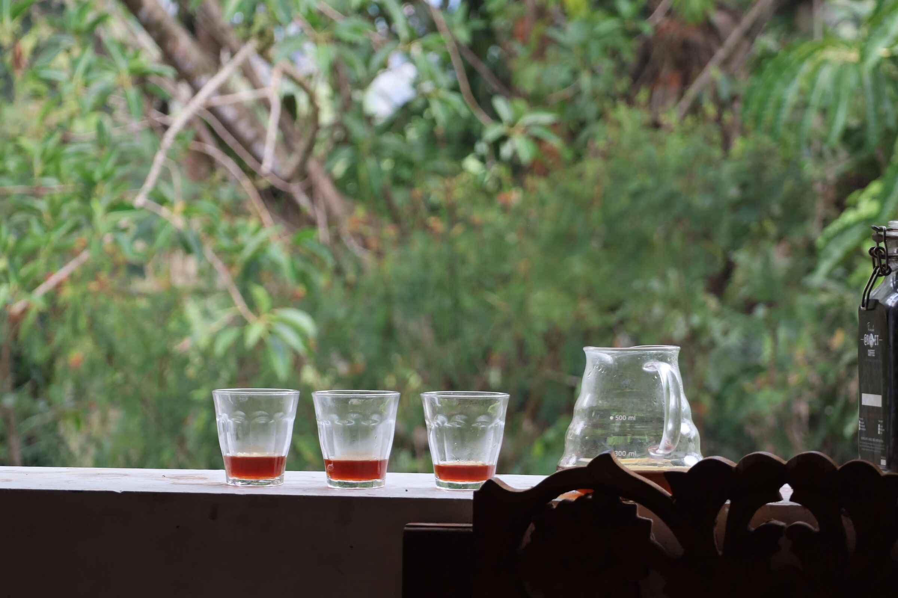
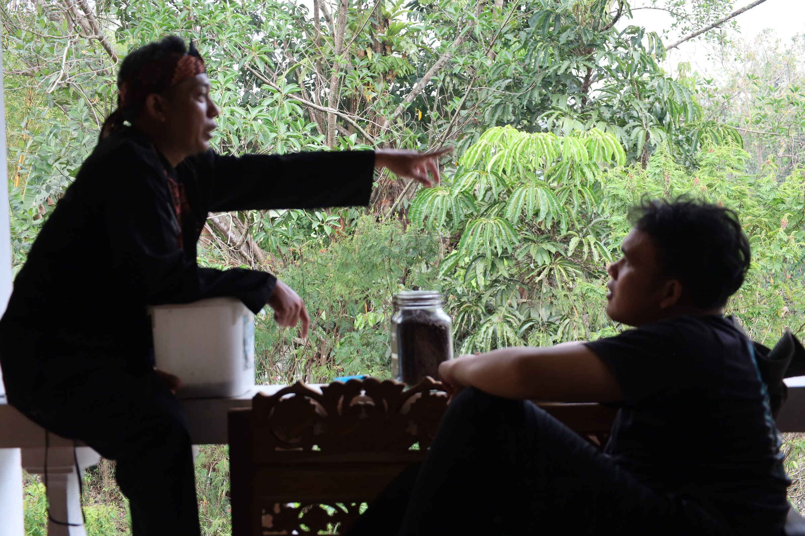
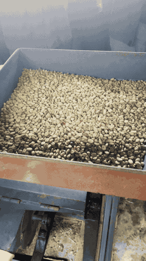
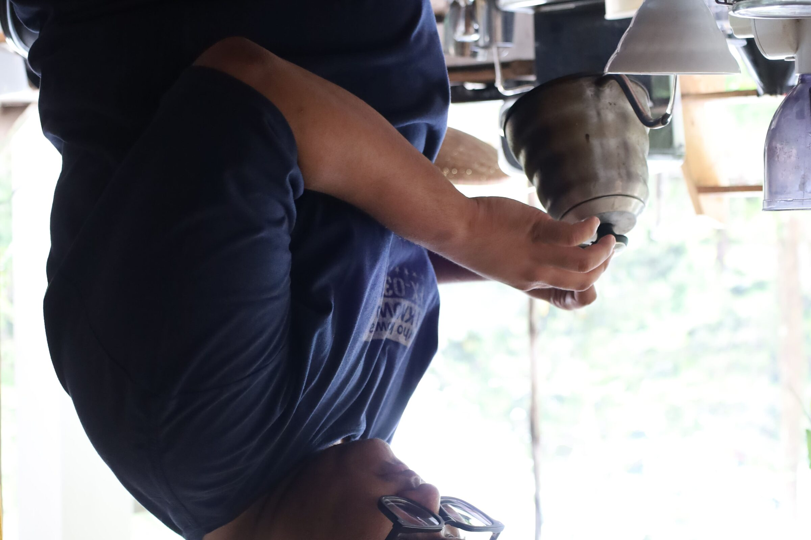
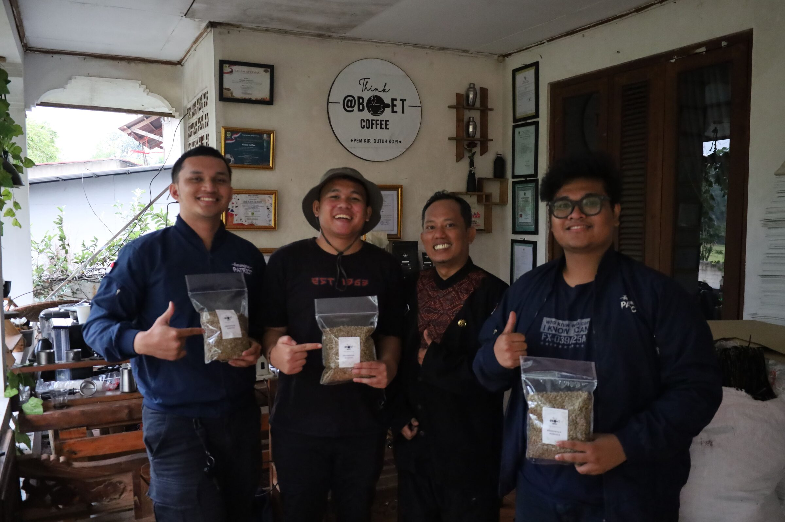

Pilih
Memperhatikan bahan dan memilih yang layak diteruskan.

KOPI TA / 2026
Dari biji kopi hingga halaman terakhir. Setiap cangkir memiliki perjalanan. Setiap tugas akhir juga.
01 HULU
Ada tanah, kebun, musim, dan tangan yang merawatnya. Di titik ini, perjalanan KOPI TA belum berbicara tentang minuman. Ia berbicara tentang asal.


02.01 / PEOPLE02 PANEN
“Kami belajar dengan melihat lebih dekat, bertanya lebih banyak, lalu mencoba sendiri.”
Panen bukan satu gerakan. Ia adalah rangkaian keputusan kecil yang menentukan apa yang akhirnya sampai ke cangkir.
03 PROSES
Memperhatikan bahan dan memilih yang layak diteruskan.
Mengikuti proses dengan sabar, tanpa melewati detail kecil.
Mencicipi hasilnya dan mengubah apa yang perlu diperbaiki.


04 ROAST
Panas mengubah warna, aroma, dan rasa. Seperti revisi, hasil akhirnya dibentuk oleh perhatian yang diberikan sepanjang proses.
05 JOURNEY
Kopi
Tugas akhir
Tidak semua proses berjalan cepat. Beberapa hal memang harus melalui tahap demi tahap.
07 HILIR
Kopi hanyalah jeda. Yang menyelesaikan semuanya tetap kamu. KOPI TA membawa proses belajar itu sampai menjadi sesuatu yang bisa dibagi.

KOPI TA / PHILOSOPHY
Kami percaya bahwa perjalanan menuju sebuah hasil selalu terdiri dari langkah-langkah kecil.
KOPI TA / NEXT PAGE
Pilih minuman untuk menemani langkah berikutnya.